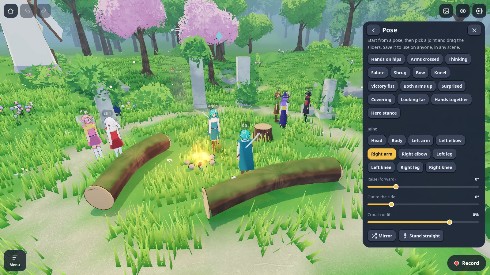
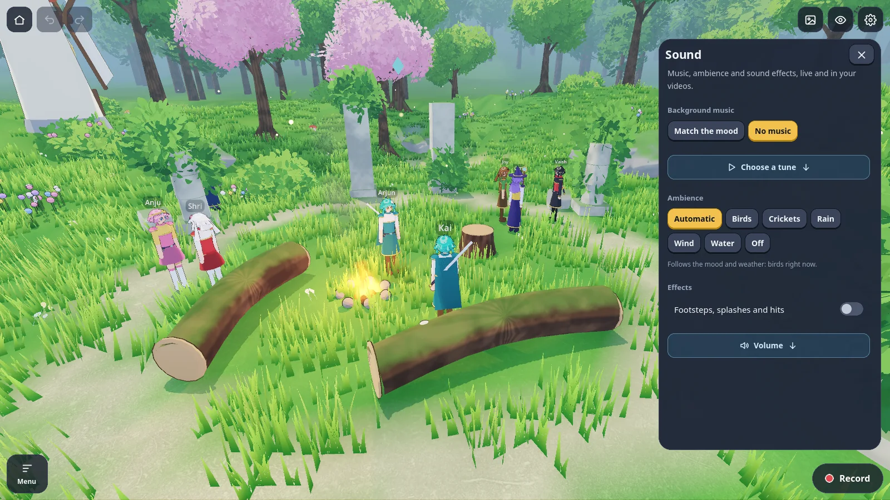
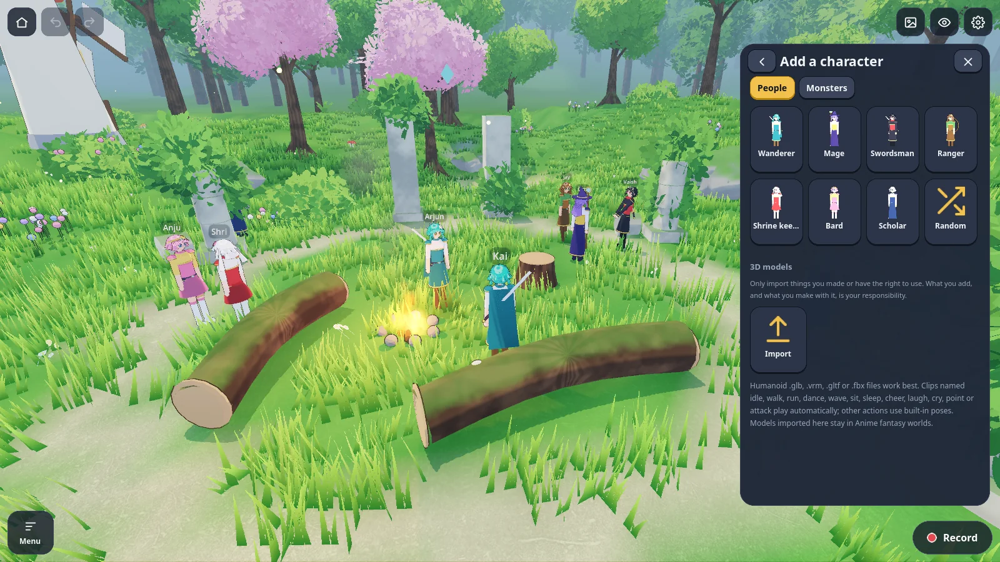

Features
Everything the studio does.
Building, casting, cameras, timing, sound and export, each shown in the app as it is in version 0.24.
Build
Sets you shape by hand.
Each look has a builder that suits it, and the same Add, Remove and Copy bar on every tool.
- Blocky: about 190 blocks, your own custom blocks and seven ready buildings.
- Anime and low-poly: raise hills, dig valleys, pour water that runs downhill, and place trees, houses and props.
- Pixel 2D: paint tiles and ground, add buildings and objects, and bring your own tile sets.
- Starting points: forest, mountain pass, night town and great hall layouts, or a ready-made scene to take apart.
Cast
Characters that know what to do.
Pick a preset or import your own model, then choose a behaviour. They keep it up while you film.
- 19 behaviours: stand, wander, chat, hang out, dance, wave, sit, follow, chase, run away, gather, patrol, sleep, celebrate, laugh, cry, point, fight and hold a pose.
- Feelings: mark pairs as friends, rivals or scared of. Friends defend each other, rivals laugh, the scared run.
- Reactions: people nearby look, gasp, point or join in when something happens.
- Triggers: when someone walks into an area or touches something, another character speaks, acts or walks over.

Poses
Hold the exact pose a line needs.
For thumbnails, reaction beats and stills, set a pose and keep it.
- 14 built-in poses from hands on hips to a victory fist.
- A pose editor with ten joints, a crouch slider and mirror.
- A pose library that every scene on the device shares.

Camera
Four cameras and a shot list.
Film a live take through the camera you're looking through, or let the shot list cut for you.
- Follow, first person and free camera for live takes.
- Cinematic moves: orbit, dolly, crane and push in, aimed at any character, with shot length and distance.
- Camera paths you lay out point by point, and camera keyframes on the timeline.
- Shot list: name each shot, add fades and title cards, and export plays them in order.

Mood
Light and weather in one tap.
Seven moods set the time of day, the sky, the fog and the weather together. Sliders fine-tune them.
- Moods: daylight, cinematic sunset, dreamy morning, fantasy glow, horror night, stormy weather and snowfall.
- Weather: clear, rain and storm, or snow, in every look.
- Effects: campfires with firelight, magic sparkles, smoke and dust.
- Music follows the mood unless you choose a tune yourself.
Timeline
Keyframes for people, camera and sound.
Press T and the scene becomes a timeline. Scrub it, loop it, and key whoever you have selected.
- A row per character for walks, actions, poses and lines.
- A camera row for keyed moves with easing.
- A sound row for music, effects and your own audio files.
- Director mode: pause the scene, move people or change what they do, and carry on from that moment.
Sound
A soundtrack that is already there.
Every built-in sound is made by the app itself, so nothing needs a licence or a download.
- 11 looping tunes and ambience for birds, crickets, rain, wind and water.
- Footsteps by surface: grass, dirt, stone, wood, sand, snow and water.
- Your own files: .ogg, .mp3 and .wav up to 60 MB, shared by every scene.
- Separate volumes for music, effects and ambience, mixed into the export.

Export
Footage in the shape you publish.
H.264 MP4 with sound on desktop when ffmpeg is installed and on Android through the phone's encoder.
- Size: 720p, 1080p, 1440p or 4K at 24, 30 or 60 fps.
- Frame: 16:9, 9:16 for Shorts and Reels, or 1:1, with a guide in the studio while you set up.
- Background: the scene, green screen, blue screen or transparent (ProRes 4444 or a PNG sequence).
- Subtitles: burned in as a box, an outline or cinema yellow, in three sizes, or left off.
- Long exports render in 10-second parts, so they pause, finish later and survive a crash.


Imports
Bring your own characters, props and sound.
Imports are copied into the app and travel inside exported scene files, so a scene opens on another device.
| What | Formats |
|---|---|
| 3D characters | .glb, .vrm, .gltf and .fbx in anime; .glb, .gltf and .fbx in low-poly. Bones are matched across 12 rig conventions, including Mixamo, VRoid, Unreal and Blender. |
| Animation clips | .fbx, .glb and .gltf clips, fitted to any humanoid and picked per action. |
| 3D objects | .glb, .gltf and .fbx, several files at once. |
| Pixel sprites | .png and .webp sheets, .ase and .aseprite files with frames, layers and tags. |
| Pixel tile sets | .png and .webp grids of 8, 16 or 32 px tiles. |
| Blocky skins | .png at 64 × 64 or 64 × 32. |
| Music and sounds | .ogg, .mp3 and .wav, up to 60 MB each. |

